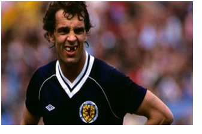
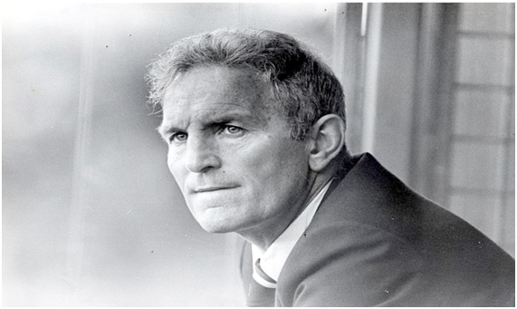

Chương 20

hia tay Docherty, United lại mời Dave Sexton. Lần này, ông gật đầu đồng ý. Dường như Sexton có duyên thế chỗ Docherty. 10 năm trước, khi Docherty rời Chelsea, cũng chính Sexton là người kế nhiệm. Thời nắm quyền tại Stamford Bridge, Sexton thành công rực rỡ, với một Cúp FA và một Cúp C2 Châu Âu. Trong khoảng 1974-1977, ông nắm QPR, biến CLB từ một đội bóng nhỏ trở thành thế lực mạnh mẽ ở giải VĐQG Anh.
Không như Docherty thơn thớt nói cười, Sexton mang phong cách một nhà giáo, trầm tính và nghiêm cẩn. Ghét giao du, né tránh chốn đông người, ông yêu thích sự bình yên, thường lấy sách làm vui. Kiến thức uyên thâm, thông kim bác cổ, Sexton giỏi nhất về văn chương, triết lý, và tâm lý học, thường xuyên trích dẫn John Stuart Mill[1] và Robert Frost[2]. “Tại làm sao tôi lại trở thành HLV bóng đá, cái đó chính tôi cũng không biết”, ông hay tự trào.
Với Sexton, huấn luyện cũng là một khoa học. Đến Old Trafford, việc đầu tiên ông làm là mua ngay đầu video và máy chiếu. Mỗi buổi tập, ông ghi hình, sau đó bật lên cho học trò cùng xem, phân tích từng điểm yếu, điểm mạnh. Trên sân, ông thiết kể hàng loạt bài tập chiến thuật mới, chi ly và tỉ mỉ đến độ cầu thủ phát điên đầu. “Tôi không hiểu nổi những thứ chiến thuật của ông ấy”, Gordon Hill phàn nàn, “Nói thế nào nhỉ? Nó chuyên sâu quá!”
Sexton muốn làm cách mạng tại United, song cũng hiểu nếu thay đổi mọi thứ một cách quá nhanh, sẽ dẫn đến xáo trộn không đáng có. Đầu mùa 1977-1978, ông giữ nguyên thành phần BHL, cũng như bộ khung đội hình chính của Docherty. Ngày 20 tháng 8, 1977, United ra quân ở vòng một giải Hạng Nhẩt, trình diễn lối chơi tấn công không khác gì dưới thời HLV cũ, giành chiến thắng 4-1 trước Birmingham City (Lou Macari lập hattrick).
Là nhà vô địch Cúp FA, United đại diện nước Anh dự Cúp C2, gặp SaintEtienne tại vòng một. Lượt đi trên đất Pháp, một nhóm fan quá khích của Quỷ Đỏ làm loạn trên khán đài, khiến cảnh sát phải vác dùi cui lên can thiệp, đập cho 37 hooligan nhập viện. UEFA theo sau bằng bản án khắc nghiệt: Loại Man đỏ khỏi giải. CLB nộp đơn kháng án: Cảnh sát nặng tay quá, đánh bao nhiêu fan chúng tôi bị thương, không phạt cảnh sát thì thôi, chứ phạt gì chúng tôi? Ban khiếu nại xét lại, giảm án xuống, chỉ bắt đội phải đá lượt về trên sân trung lập.Không được chơi sân nhà, United vẫn dễ dàng vượt qua Saint Etienne 2-0. Vào vòng kế, đội bị Porto giũa cho 4-0 ở BĐN, về Anh cố sức thắng lại 5-2, nhưng vẫn bị loại.
Lúc thua Porto là vào tháng 11. Sexton nhận thấy lực lượng hiện tại của United khá mỏng, còn thiếu chiều sâu, chỉ cần vài trụ cột chấn thương sẽ lập tức rơi vào khủng hoảng. Bên cạnh đó, cầu thủ đội phần nhiều đều mỏng cơm, hơi kém về thể lực so với các đối thủ. Vậy nên đầu năm mới, ông tậu về bộ đôi chiến binh Scotland của Leeds: hậu vệ Gordon McQueen và tiền đạo Joe Jordan.
Vừa đến Old Trafford, McQueen đã lấy được lòng người hâm mộ với câu nói bất hủ: “99% cầu thủ bóng đá muốn đầu quân cho Manchester United. 1% còn lại nói không muốn đều là những kẻ dối trá!” To cao (1m91) nhanh nhẹn, McQueen không những thủ tốt, mà còn thường tham gia tấn công, đội đầu ghi bàn. Anh cùng Martin Buchan hợp thành cặp trung vệ vững vàng.Joe Jordan thìsở hữu lối chơi dũng mãnh, giỏi không chiến, càn lướt, tầm hoạt động rất rộng.Ở Jordan, chẳng có điểm gì đáng phàn nàn, trừ việc…xấu trai, răng chả có!

Joe Jordan (Ảnh: Bbc.co.uk)
Song song với những thay đổi về nhân sự, Sexton bắt đầu điều chỉnh chiến thuật cho phù hợp triết lý thận trọng của mình. Ông bỏ đội hình 4-2-4 phiêu lưu, chuyển sang dùng 4-4-2. Như vậy, trên hàng tiền đạo, Steve Coppell và Gordon Hill phải lui xuống tuyến giữa, hỗ trợ cho hai hậu vệ cánh Jimmy Nicholl và Arthur Albiston. Nếu như bên cánh phải, Coppell vui vẻ nghe theo sự chỉ đạo của HLV, thì nơi cánh trái, Hill vẫn quen tấn công, nhất quyết không chịu lui về thủ. Có trận, mặc cho đối phương quần Albiston tơi bời hoa lá, Hill cứ đứng nhông nhông bên phần sân khách, làm đội trưởng Buchan phát cáu, phải chạy lên kéo tai anh xuống! Không nghe lời thầy, Hill bị bán vào cuối mùa, dù anh dẫn đầu danh sách phá lưới của CLB, với 19 bàn cả thảy.
“Tôi và Sexton mâu thuẫn nhau”, Hill hồi tưởng, “Ổng kêu tôi phòng ngự, mà tôi thì không phòng ngự được. Máu tôi là máu tấn công mà. Chúng tôi ngồi lại nói chuyện. Tôi nói thẳng với ổng tôi không thể làm điều ổng muốn, thế là ổng bảo không còn chỗ cho tôi trong đội hình nữa. Thú thật là nghe ổng nói xong, tôi bật khóc tại chỗ.”
Cùng ra đi với Hill có thủ thành lão luyện Alex Stepney. Stepney ra sân lần cuối vào tháng 8, 1978, trong trận giao hữu gặp Real Madrid, kỷ niệm đệ bách chu niên thành lập Manchester United. Thế chỗ anh lần lượt là Paddy Roche, rồi Gary Bailey. Bailey sẽ bắt chính cho United đến tận 1986[3].
Sau những điều chỉnh của Sexton, lối chơi United trở nên nặng nề, xù xì, không còn “gợi cảm” như trước. Một số trận đội chơi quá chán, bị chính khán giả nhà la ó. Lượng khán giả đến sân giảm, khiến doanh thu CLB từ hơn 2 triệu bảng năm 1977 giảm xuống còn 1.7 triệu năm 1978. Tình hình tài chính đang lời biến sang lỗ.
Xù xì mà hiệu quả còn đỡ, đằng này hiệu quả không thấy đâu. Hai mùa đầu dưới quyền Sexton, Quỷ Đỏ chỉ lửng lơ giữa bảng xếp hạng. Cúp FA cũng lẩn tránh họ. Năm 1979, United xuất sắc đánh bại Liverpool ở bán kết, nhưng gục ngã trước Arsenal trong một trận chung kết thuộc loại kịch tính nhất lịch sử. Arsenal sớm dẫn 2-0 và áp đảo toàn diện. Đội thành Man suốt trận chẳng có cơ hội nào, bỗng đến phút 86 chọt vào một quả nhờ công McQueen. Hai phút sau, McIlroy nhận bóng trong vòng cấm, lừa qua hai hậu vệ đối phương, quân bình tỷ số 2-2. Khốn thay, trong lúc các chú quỷ còn lo ăn mừng, Alan Sunderland lẻn xuống sút tung lưới Bailey, giựt về chiến thắng cho Pháo Thủ ngay phút 89.
Ngay Cúp FA cũng không giành nổi, Sexton cảm thấy chiếc ghế dưới chân mình lung lay dữ dội. Trước nguy cơ mất chức, ông phá kỷ lục chuyển nhượng của CLB, mua về Ray Wilkins với giá 825000 bảng, sau đó bỏ tiếp 300000 mua hậu vệ người Nam Tư Nikola Jovanovic. Nhắc đến Jovanovic vì đây là cầu thủ nước ngoài đầu tiên trong lịch sử Manchester United[4], chứ thành tích của anh không có gì đáng kể. Chỉ sau một năm ở Old Trafford, Jovanovic nhớ nhà, quay về Nam Tư, đem theo cả chiếc BMW CLB cấp cho. Sau này, được hỏi về United, anh cho biết đó là CLB…thiếu chuyên nghiệp nhất mình từng khoác áo, nơi mà cầu thủ suốt ngày chỉ nhậu nhẹt say xỉn!
So với Jovanovic, Ray Wilkins đóng góp nhiều hơn vạn bội. 17 tuổi, Wilkins ra mắt trong màu áo Chelsea, 18 tuổi mang băng đội trưởng. Năm sang United, anh bước sang tuổi 23, đang là trụ cột ĐTQG, được đánh giá là một tiền vệ hàng đầu không chỉ của nước Anh, mà trên toàn châu Âu. Có thể nói, Wilkins chính là ngôi sao lớn nhất được mua về Old Trafford kể từ sau Denis Law. Có Wilkins, tuyến hai United như được chắp cánh, và CLB lên như diều, áp sát ngôi đỉnh bảng mùa 1979-1980. Trước trận cuối cùng gặp Leeds, United bằng điểm Liverpool, chỉ thua về hiệu số, vẫn tràn trề hy vọng vô địch. Tiếc rằng đội bị Leeds đánh bại 2-0, đành chấp nhận ngôi á quân. Tuy Quỷ Đỏ vẫn chơi theo kiểu ru ngủ, ghi rất ít bàn thắng[5], vị trí thứ nhì là rất đáng khích lệ.
Những trận đấu cuối mùa, Louis Edwards không được chứng kiến, bởi ông đã qua đời vào tháng 2, 1980. Trái với nhiều dự đoán, lên nắm quyền không phải Sir Matt Busby, mà là Martin Edwards, con trai chủ tịch vừa quá cố. “Một số thành viên BLĐ muốn Matt làm chủ tịch, tôi làm phụ tá để học hỏi kinh nghiệm”, Martin Edwards kể, “Matt đã ngoài 70, song còn khỏe lắm. Tôi lúc ấy 34 tuổi, cảm thấy không giành lấy thì thời cơ sẽ mãi mãi trôi qua. Thế nên, tôi quyết tranh chức chủ tịch cho bằng được.”
Busby từng muốn đưa con trai Sandy vào BLĐ mà thất bại, nay tầm ảnh hưởng của ông cũng mất luôn. Trong khi Edwards bố bị coi là “bù nhìn của Busby”, Edwards con vừa nhậm chức liền tước hết quyền hành Sir Matt, chỉ tặng cho ông cái chức Chủ Tịch Danh Dự hữu danh vô thực. Busby đành chấp nhận rút vào hậu trường, bởi số cổ phần ông nắm không đủ lớn để chống lại Martin.
Đang độ tuổi sung sức, Martin Edwards ôm mọi thứ vào mình. Không chỉ cô lập Sir Matt, ông còn giành phần lớn công việc của tổng thư ký Les Olive, biến tổng thư ký thành chức vụ “ngồi mát ăn bát vàng”. Chuyển nhượng và lương bổng cầu thủ là những lãnh vực thuộc quyền HLV trưởng và Matt Busby, nay ông cũng nắm tất. Edwards bỏ lối quản lý lạc hậu, mang nặng tính truyền thống của người cha, biến United thành một doanh nghiệp năng động trên thương trường. Ông cho xuất bản tuần báo riêng của CLB, và đầu tư ngoài ngành sang cả lĩnh vực bóng rổ.
Hài lòng với thành tích á quân, Edwards ký hợp đồng mới với Sexton, tăng lương gấp đôi cho HLV này, đồng thời cấp ngân sách hậu hĩnh để mua thêm cầu thủ. Có tiền trong tay, Sexton lại phá kỷ lục chuyển nhượng, bỏ ra số tiền khổng lồ 1.25 triệu bảng mua tiền đạo Garry Birtles. Để có chỗ cho Birtles, ông bán Jimmy Greenhoff sang Crewe Alexandra,và cầu thủ trẻ Andy Ritchie sang Brighton.
Lúc mới mua, không ai chê trách gì Sexton, vì Birtles là cầu thủ đẳng cấp, vừa hai lần liên tiếp giành Cúp C1 với Nottingham Forest. Không ngờ, Birtles ở Forest thì hay, qua United lại chơi như…gà mắc tóc, đá hết mùa không lập công nổi một lần. Người hâm mộ lắc đầu tiếc nuối: Phải chi đừng bán Greenhoffvà Ritchie. Mùa trước Greenhoff chấn thương, đá có bốn trận tại giải Hạng Nhất mà vẫn kiếm được một bàn, còn Ritchie tuy dự bị, nhưng mỗi khi ra sân đều phá lưới đối phương, đâu như Birtles trận nào cũng đá chính mà ngòi tịt vẫn hoàn tịt!Không ghi bàn đã đành, Birtles còn làm cản lối Joe Jordan. Cả hai cùng thuận chân trái, nên thường xuyên dẫm chân, cản phá cơ hội của nhau. Ngày nay, nhắc đến Birtles tức là nhắc đến một trong những vụ chuyển nhượng thất bại nhất tự cổ chí kim.
Tiền đạo tậm tịt, Ray Wilkins thì chấn thương, nghỉ dài hạn, United không làm nên trò trống gì mùa 1980-1981. CLB thất bại ngay vòng một Cúp C3 Châu Âu, bị loại sớm ở cả Cúp FA và Cúp Liên Đoàn (LĐ). Tại giải VĐQG, đội hòa 18 trận, trong đó có 8 trận hòa 0-0. Đứng thứ tám chung cuộc, song Quỷ Đỏ chỉ ghi nhiều hơn bốn bàn so với đội chót bảng Crystal Palace. Bị ru ngủ mãi, CĐVkhông đến sân nữa. Nhiều trận, Old Trafford chỉ thu hút được không đến 40000 khán giả. Cảnh người hâm mộ xếp hàng rồng rắn 2-3 tiếng trước khi trận đấu diễn ra chỉ còn là dĩ vãng.
Thành tích đi xuống, Sexton mất điểm với BLĐ. Sống khép kín, không biết PR, lấy lòng thiên hạ, ông bị báo giới và fan ghét bỏ. Chỉ còn cầu thủ là vẫn kính trọng, khâm phục kho tri thức bao la của thầy. Có điều, kính thì kính, chứ ai cũng ngán ngẩm việc Sexton giảng lý thuyết quá nhiều. Chỉ một mảng chiến thuật nhỏ là phối hợp phạt góc thôi, ông có thể tán đến cả giờ, đi vào từng chi tiết như A phải đứng bên này, B đứng bên kia, C chạy chỗ ra sao, D làm "chim mồi" như thế nào. Học trò càng nghe càng rối.
"Cả đám ngồi lắc đầu", Macari nhớ lại buổi hôm đó, "Rồi Gordon lớn (McQueen) đứng lên: Hay mình cứ làm thế này nhé, không cầu kỳ như kiểu thầy đâu, nhưng chắc cũng hiệu quả đấy. Cứ kêu ai đó ở bên ngoài tạt vào, em ở trong, dùng cái đầu ngu này đánh một cú vào lưới. Thế là xong, rồi mình về!"
Công bằng mà nói, phong độ United cuối mùa 1980-1981 được cải thiện đáng kể. Ray Wilkins trở lại sau chấn thương, truyền cảm hứng cho đội thắng 7 trận liền. Tuy thế, đó là những trận thắng rất khô cứng, với những tỷ số đậm “chất Sexton” là 1-0 và 2-1. Vả lại, ngay từ tháng 2, 1981, BLĐ đã họp, thỏa thuận sẽ sa thải Sexton khi mùa giải kết thúc. Trong BLĐ, chỉ duy nhất Matt Busby còn ủng hộ Sexton. Tiếng nói của một mình Sir Matt không giá trị gì.
“Sexton là người tốt và liêm chính. Không dễ khi phải chấm dứt hợp đồng với ông ấy”, Martin Edwards nói, “Nhưng CLB không tiến bộ, khán giả không hài lòng. United là một đội bóng có truyền thống và bản sắc riêng. Người hâm mộ đòi hỏi bản sắc ấy, không muốn nó bị phá hủy.”

HLV Dave Sexton (Ảnh: Dailymail.co.uk)
Chú thích:
[1] John Stuart Mill (1806-1873): Triết gia kiêm kinh tế gia người Anh, tác giả các cuốn Kinh Tế Chính Trị Học Nguyên Lý (Principles of Political Economy), Tự Do Luận (On Liberty), Công Lợi Chủ Nghĩa (Utilitarianism)…
[2] Robert Frost (1874-1963): Thi hào Mỹ, từng bốn lần nhận giải Pulitzer về thơ.
[3] Gary Bailey chính là thần tượng của người khổng lồ Đan Mạch Peter Schmeichel.
[4] Không tính các cầu thủ Scotland, Wales và Ireland.
[5] Vua phá lưới Joe Jordan ghi được có 13 bàn. Ngoài Jordan, không ai ghi được quá 10 bàn.